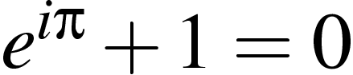

MAS205
Complex Variables
Lecturer:
Thomas Prellberg
Semester 1, 2005/2006
Course description
Course description
from the College course directory
Course description
from the Maths UG Handbook
Course information
Course syllabus
Course objectives
Notes on prerequisites
Handout on the Cauchy Theorem
Handout on the the "missing proofs"
Tests on prerequisites (will be used for exercise classes on Oct 3):
Test 1
,
Test 2
Remedial classes
will take place Fri 4-5 in MLT starting October 7
Coursework
Coursework 1
(due Oct 12, 10:30am),
sample solutions
Coursework 2
(due Oct 19, 10:30am),
sample solutions
Coursework 3
(due Oct 26, 10:30am),
sample solutions
Coursework 4
(due Nov 2, 10:30am),
sample solutions
Lecture on Nov 7 used for
review
,
Test
on Nov 9, 4-5, Great Hall (special requirements: Maths G2)
solutions and marking scheme
(There will be no exercise classes or further lectures during week 7)
Coursework 5
(due Nov 16, 10:30am),
sample solutions
Coursework 6
(due Nov 23, 10:30am),
sample solutions
Coursework 7
(due Nov 30, 10:30am),
sample solutions
Coursework 8
(due Dec 7, 10:30am),
sample solutions
Coursework 9
(due Dec 14, 10:30am),
sample solutions
Previous Exams
2005
, 2004,
2003
,
2002
,
2001
,
2000
,
1999
,
1998
,
1997
Due to a large list of relevant previous exams, there is no need for a sample exam paper.
Thomas Prellberg
September 2005